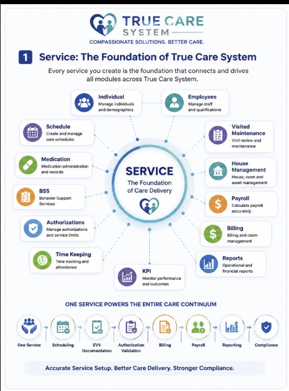
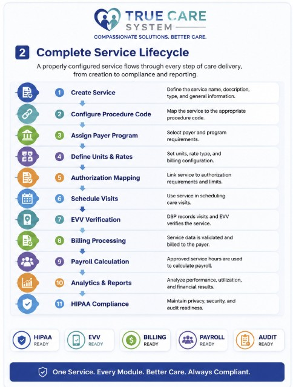

The Service Management module establishes the standardized service structure used throughout the True Care System. Each service defines how care is configured, scheduled, authorized, delivered, verified, documented, billed, reported, and reviewed across the organization.
A properly configured service supports consistent operations and helps providers align service delivery with approved programs, payer requirements, procedure codes, authorization limits, Electronic Visit Verification (EVV), billing rules, payroll, reporting, and applicable privacy and compliance obligations.
Services are not isolated records. They provide the operational foundation that connects multiple True Care System modules and workflows.

Figure 1. A configured service connects the primary operational modules of the True Care System.
A service moves through a controlled lifecycle from initial configuration to care delivery, verification, billing, payroll, reporting, and compliance review.

Figure 2. The service lifecycle from configuration through compliance and reporting.